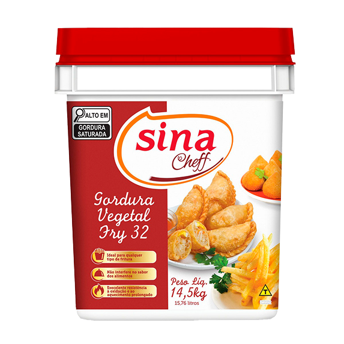

Qualidade que faz a diferença
Produtos selecionados para o seu negócio

Margarina 80% de Lipídios c/ SAL
- Ideal para receitas de panificação, confeitaria e food service
- Proporciona maior volume ao produto final
- Flexibilidade no desenvolvimento de margarinas adequadas ao seu processo
- O mais usado em padarias
- Maleabilidade e maciez em máquina
- Sabor e aroma suave
Ficha Técnica
| Código | Produto | Embalagem | EAN |
|---|---|---|---|
| 50010019 | Margarina 80% de Lipídios com sal | BALDE de 15 kg | 7898947056166 |
Armazenagem: manter em local fresco e seco, ao abrigo
de luz.
Validade: 6 meses (180 dias) a partir da data de fabricação. Após aberto: consumir em até 30 dias.
Validade: 6 meses (180 dias) a partir da data de fabricação. Após aberto: consumir em até 30 dias.
.png)
Óleo Vegetal Sebella Fry
Produto elaborado em uma composição especial para profissionais que necessitam de alta performance em suas frituras. O produto foi aditivado com antiespumante e antioxidante, para garantir melhores resultados e rendimento.
- Frituras sequinhas e crocantes
- Contém antiespumante e antioxidante
- Ponto de Fumaça 232ºC
- Não interfere no sabor dos alimentos
- 0% Gordura Trans
- Excelente rendimento
Ficha Técnica
| Código | Produto | Embalagem | EAN |
|---|---|---|---|
| 52030010 | Óleo Vegetal Sebella Fry | Balde de 14,5 KG | 7898621560170 |
Armazenagem: Local limpo, seco, fresco e protegido da
luz e fontes de calor.
Validade: 6 meses (180 dias) a partir da data de fabricação. Após aberto: consumir em até 30 dias.
Validade: 6 meses (180 dias) a partir da data de fabricação. Após aberto: consumir em até 30 dias.

Gordura Vegetal Fry 32, 14,5kg
Com alto desempenho em aplicações profissionais e domésticas, a Gordura Vegetal Fry 32 é formulada para oferecer estabilidade, rendimento e versatilidade. Uma alternativa 100% vegetal que combina tecnologia com saúde e sabor.
- Alta performance em panificação e confeitaria
- Atende diversos perfis de consumo, inclusive dietas restritivas
- Mais saudável e em conformidade com padrões nutricionais
- Ideal para usos prolongados sem alteração de sabor ou textura
- Contribui para o ponto ideal em preparos exigentes
- Não interfere nas características dos alimentos
- Indicado para bolos, biscoitos, snacks e muito mais
Ficha Técnica
| Código | Produto | Embalagem | EAN |
|---|---|---|---|
| 52070001 | Gordura Vegetal Fry 32 | BALDE 14,5 kg | 7898621560118 |
Armazenagem: manter em local fresco seco e longe de
fonte de calor.
Validade: 6 meses (180 dias). Após aberto: consumir em até 30 dias.
Validade: 6 meses (180 dias). Após aberto: consumir em até 30 dias.